Rafal P. Wiewiora
Computational Chemist
Projects
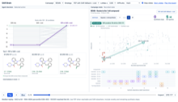
SAR Brain
A reinforcement learning environment where agents replay medicinal chemistry campaigns and choose which compounds to predict, make, and test.
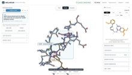
MolariumEdit a molecule in its protein binding pocket and simulate how it moves, all in the browser.
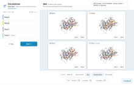
Foldarium BetaTests whether chemists can recognize an accurate ligand pose that a co-folding model ranked too low.
Selected publications
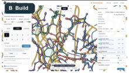
Molarium: Agent-Generated Adaptive Software for Molecular DesignR. P. Wiewiora and W. Sherman · ChemRxiv preprint · 2026
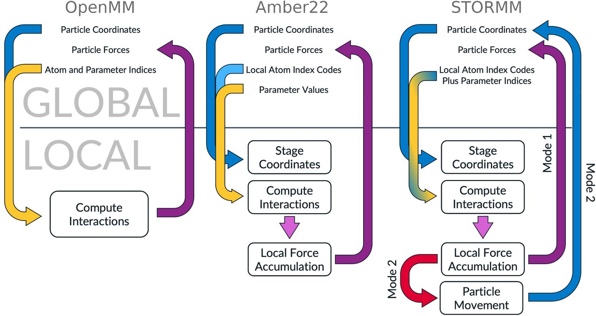
STORMM: Structure and topology replica molecular mechanics for chemical simulationsD. S. Cerutti, R. P. Wiewiora, S. Boothroyd, and W. Sherman · Journal of Chemical Physics · 2024
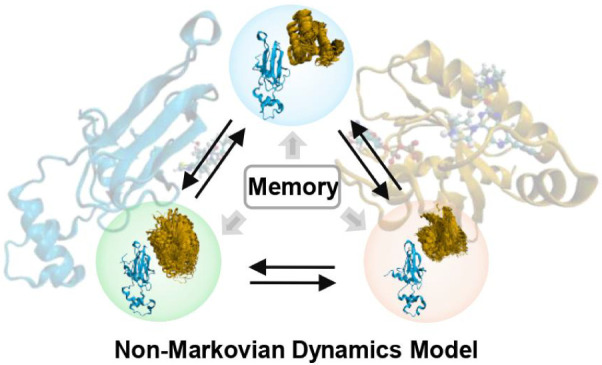
Non-Markovian dynamic models identify non-canonical KRAS–VHL encounter complex conformations for novel PROTAC designQiu, Wiewiora et al. · JACS Au · 2024
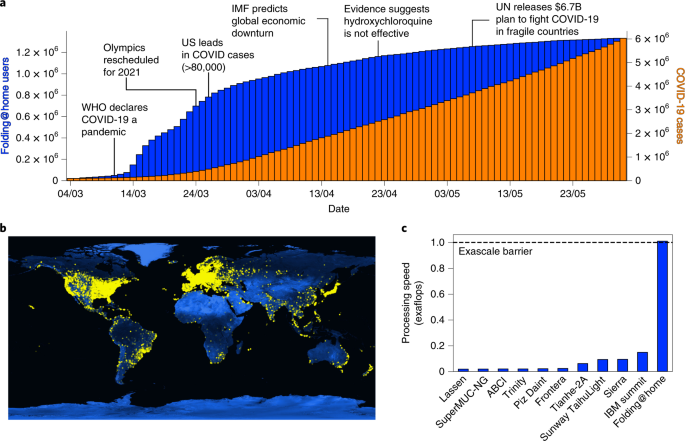
SARS-CoV-2 simulations go exascale to predict dramatic spike opening and cryptic pockets across the proteomeM. I. Zimmerman et al. (including R. P. Wiewiora) · Nature Chemistry · 2021
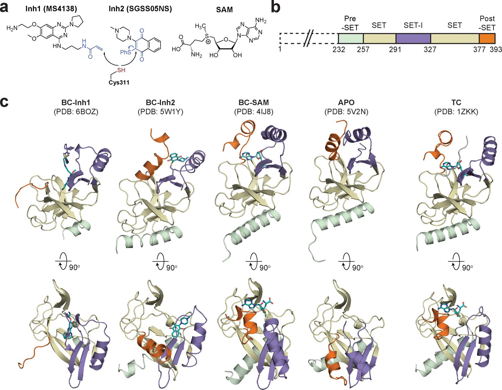
The dynamic conformational landscape of the protein methyltransferase SETD8S. Chen and R. P. Wiewiora (equal contribution), et al. · eLife · 2019
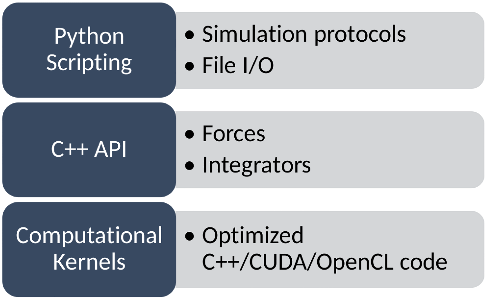
OpenMM 7: Rapid development of high performance algorithms for molecular dynamicsP. Eastman, R. P. Wiewiora et al. · PLOS Computational Biology · 2017
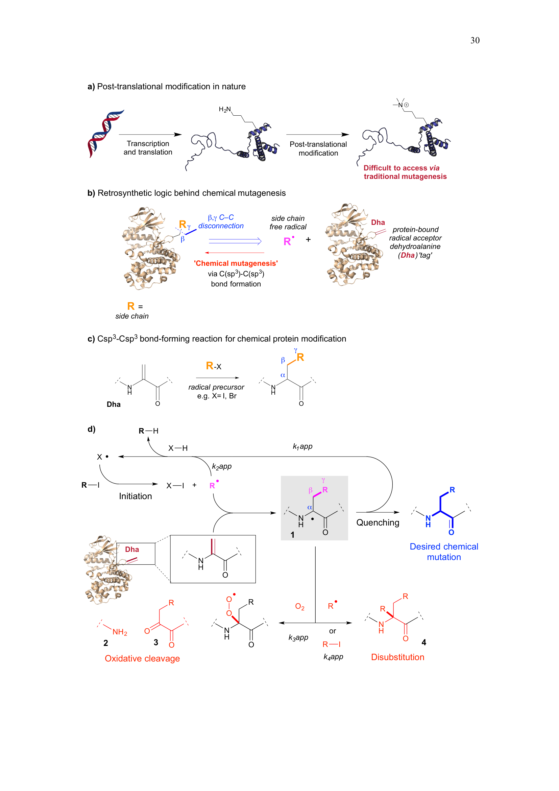
Posttranslational mutagenesis: A chemical strategy for exploring protein side-chain diversityT. H. Wright et al. · Science · 2016
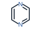
An efficient one-pot synthesis of 2-bromo-6-aryl[5H]pyrrolo[2,3-b]pyrazinesI. Simpson, S. A. St-Gallay, S. Stokes, D. T. E. Whittaker, and R. Wiewiora · Tetrahedron Letters · 2015